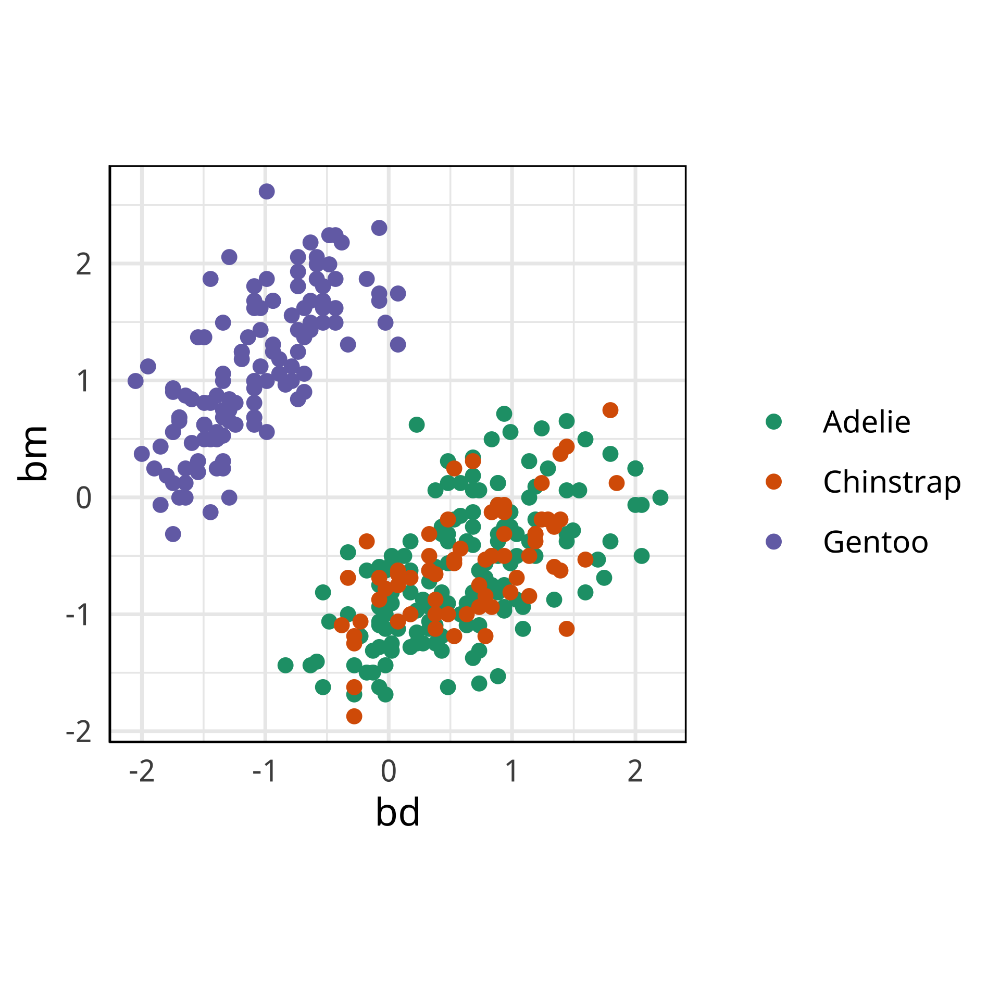

Visual methods for multivariate data - a journey beyond 3D
Session 1
Professor Di Cook
Monash University
@visnut@aus.social
Outline
- Session 1: Introduction to tours
- Getting started: package installs
- What is a tour?
- Interpreting what you see
- Different types of tours
- Interpreting what you see
- Creating your own tour display
- Saving your tour plot
- Session 2: Combining tours with models
- Model in the data space philosophy
- Comparison to non-linear dimension reduction: liminal
- Classification boundaries
- Utilising random forest diagnostics
- Dendrograms in the data space
Getting set up (1/2)
tourr: Implements geodesic interpolation and basis generation functions that allow you to create new tour methods from R.
geozoo: Geometric objects defined in ‘geozoo’ can be simulated or displayed in the R package ‘tourr’.
spinifex: Implements manual control, where the contribution of a selected variable can be adjusted between -1 to 1, to examine the sensitivity of structure in the data to that variable.
liminal: A special purpose package to compare the views of the data provided by non-linear dimension with tSNE and a tour.
Getting set up (2/2)
- Grab the
slides1.Rfile from https://github.com/dicook/MDAG_2022
My version of R, and installed packages is:
#> R version 4.2.1 (2022-06-23)
#> Platform: x86_64-apple-darwin17.0 (64-bit)
#> Running under: macOS Big Sur ... 10.16
#>
#> Matrix products: default
#> BLAS: /Library/Frameworks/R.framework/Versions/4.2/Resources/lib/libRblas.0.dylib
#> LAPACK: /Library/Frameworks/R.framework/Versions/4.2/Resources/lib/libRlapack.dylib
#>
#> locale:
#> [1] en_AU.UTF-8/en_AU.UTF-8/en_AU.UTF-8/C/en_AU.UTF-8/en_AU.UTF-8
#>
#> attached base packages:
#> [1] stats graphics grDevices utils datasets methods base
#>
#> other attached packages:
#> [1] showtext_0.9-5 showtextdb_3.0 sysfonts_0.8.8 ggthemes_4.2.4 forcats_0.5.2 stringr_1.4.1 dplyr_1.0.10
#> [8] purrr_0.3.5 readr_2.1.3 tidyr_1.2.1 tibble_3.1.8 ggplot2_3.4.0 tidyverse_1.3.2 knitr_1.40
#>
#> loaded via a namespace (and not attached):
#> [1] tidyselect_1.2.0 xfun_0.34 haven_2.5.1 gargle_1.2.1 colorspace_2.0-3
#> [6] vctrs_0.5.1 generics_0.1.3 htmltools_0.5.3 yaml_2.3.6 utf8_1.2.2
#> [11] rlang_1.0.6 pillar_1.8.1 withr_2.5.0 glue_1.6.2 DBI_1.1.3
#> [16] dbplyr_2.2.1 modelr_0.1.9 readxl_1.4.1 lifecycle_1.0.3 munsell_0.5.0
#> [21] gtable_0.3.1 cellranger_1.1.0 rvest_1.0.3 evaluate_0.18 tzdb_0.3.0
#> [26] fastmap_1.1.0 curl_4.3.3 fansi_1.0.3 broom_1.0.0 backports_1.4.1
#> [31] scales_1.2.1 googlesheets4_1.0.1 jsonlite_1.8.3 fs_1.5.2 hms_1.1.2
#> [36] digest_0.6.30 stringi_1.7.8 grid_4.2.1 cli_3.4.1 tools_4.2.1
#> [41] magrittr_2.0.3 crayon_1.5.2 pkgconfig_2.0.3 ellipsis_0.3.2 xml2_1.3.3
#> [46] reprex_2.0.2 googledrive_2.0.0 lubridate_1.9.0 timechange_0.1.1 assertthat_0.2.1
#> [51] rmarkdown_2.18 httr_1.4.4 rstudioapi_0.14 R6_2.5.1 compiler_4.2.1Load the penguins data
library(tidyverse)
library(palmerpenguins)
penguins <- penguins %>% filter(!is.na(bill_length_mm))
penguins_sub <- penguins[,c(1, 3:6)] %>%
mutate(across(where(is.numeric), ~ scale(.)[,1])) %>%
rename(bl = bill_length_mm,
bd = bill_depth_mm,
fl = flipper_length_mm,
bm = body_mass_g)
summary(penguins_sub)#> species bl bd fl bm
#> Adelie :151 Min. :-2.17 Min. :-2.05 Min. :-2.06 Min. :-1.87
#> Chinstrap: 68 1st Qu.:-0.86 1st Qu.:-0.79 1st Qu.:-0.78 1st Qu.:-0.81
#> Gentoo :123 Median : 0.10 Median : 0.08 Median :-0.28 Median :-0.19
#> Mean : 0.00 Mean : 0.00 Mean : 0.00 Mean : 0.00
#> 3rd Qu.: 0.84 3rd Qu.: 0.78 3rd Qu.: 0.86 3rd Qu.: 0.68
#> Max. : 2.87 Max. : 2.20 Max. : 2.14 Max. : 2.62
See Allison Horst’s web site for more details.
About the penguins data

|

|
|
| Adélie 1 | Gentoo 2 | Chinstrap 3 |
Simple scatterplot
Our first tour
What did you see?
- clusters ✅
- outliers ✅
- linear dependence ✅
- elliptical clusters with slightly different shapes ✅
- separated elliptical clusters with slightly different shapes ✅
Movement patterns
Movement of points, generally in a grand tour, can provide additional information about structure in high-dimensions.
Reading axes - interpretation
Length and direction of axes relative to the pattern of interest
Reading axes - interpretation
Length and direction of axes relative to the pattern of interest

What is a tour?
A grand tour is by definition a movie of low-dimensional projections constructed in such a way that it comes arbitrarily close to showing all possible low-dimensional projections; in other words, a grand tour is a space-filling curve in the manifold of low-dimensional projections of high-dimensional data spaces.
\({\mathbf x}_i \in \mathcal{R}^p\), \(i^{th}\) data vector
\(F\) is a \(p\times d\) orthonormal basis, \(F'F=I_d\), where \(d\) is the projection dimension.
The projection of \({\mathbf x_i}\) onto \(F\) is \({\mathbf y}_i={\mathbf x}_iF\).
Tour is indexed by time, \(F(t)\), where \(t\in [a, z]\). Starting and target frame denoted as \(F_a = F(a), F_z=F(t)\).
The animation of the projected data is given by a path \({\mathbf y}_i(t)={\mathbf x}_iF(t)\).
Geodesic interpolation between planes
Tour is indexed by time, \(F(t)\), where \(t\in [a, z]\). Starting and target frame denoted as \(F_a = F(a), F_z=F(t)\).
The animation of the projected data is given by a path \({\mathbf y}_i(t)={\mathbf x}_iF(t)\).
Understanding the projections
Let’s take a look at some common high-d shapes with a grand tour
4D spheres
Hollow

Solid

4D cubes
Hollow

Solid
Others
Torus

Mobius
Path on the space of all projections
A grand tour is like a random walk (with interpolation) through the space of all possible projections: sphere for 1D, torus for 2D.1

Other tour types
- guided: follows the optimisation path for a projection pursuit index.
- little: interpolates between all variables.
- local: rocks back and forth from a given projection, so shows all possible projections within a radius.
- dependence: two independent 1D tours
- frozen: fixes some variable coefficients, others vary freely.
- manual/radial: control coefficient of one variable, to examine the sensitivity of structure this variable. See
spinifexpackage. - slice: use a section instead of a projection.
- sage: reverses the piling problem when projecting from high-dimensions.
- pca: tour on \(k\) principal components, but show original variable axes. High-d biplots.
Guided tour
New target bases are chosen using a projection pursuit index function
\[\mathop{\text{maximize}}_{F} g(xF) ~~~\text{ subject to } F \text{ being orthonormal}\]
holes: This is an inverse Gaussian filter, which is optimised when there is not much data in the center of the projection, i.e. a “hole” or donut shape in 2D.central mass: The opposite of holes, high density in the centre of the projection, and often “outliers” on the edges.LDA/PDA: An index based on the linear discriminant dimension reduction (and penalised), optimised by projections where the named classes are most separated.
Grand
Might accidentally see best separation
Guided, using LDA index
Moves to the best separation
Manual tour
- start from best projection, given by projection pursuit
bdcontribution controlled- if
bdis removed from projection, Gentoo separation disappears bdis important for distinguishing Gentoo

Manual tour
- start from best projection, given by projection pursuit
blcontribution controlledblis important for distinguishing Adelie from Chinstrap
Local tour
Rocks from and to a given projection, in order to observe the neighbourhood
Slice tour
Solid 4D sphere
Hollow 4D sphere

Geometric shapes with slice tour
4D Torus
4D Hollow Cube
PCA tour
Compute PCA, reduce dimension, show original variable axes in the reduced space.
Projection dimension and displays
1D projections displayed as a density
Density contours overlaid on a scatterplot
Tours are used for (1/2)
- Classification:
- to check assumptions of models
- to examine separations between groups
- determine variable importance
- examine boundaries
- random forest diagnostics vote matrix
- Dimension reduction
- go beyond 2 PCs
- work with much higher dimensional data
- check for not linear dependencies
Tours are used for (2/2)
- Clustering:
- examine shape of clusters
- separation between clusters
- compare cluster solution
- view the dendrogram in data space
- Compositional data:
- shapes and clusters in a simplex
More on these in Session 2
Creating a new display
function (center = TRUE, axes = "center",
half_range = NULL, col = "black", pch = 20,
cex = 1, edges = NULL, edges.col = "black",
...)
{
labels <- NULL
if (!areColors(col))
col <- mapColors(col)
init <- function(data) {
half_range <<- compute_half_range(
half_range, data, center)
labels <<- abbreviate(colnames(data), 3)
}
if (!is.null(edges)) {
if (!is.matrix(edges) && ncol(edges) == 2) {
stop("Edges matrix needs two columns,
from and to, only.")
}
}
render_frame <- function() {
par(pty = "s", mar = rep(0.1, 4))
blank_plot(xlim = c(-1, 1),
ylim = c(-1, 1))
}
render_transition <- function() {
rect(-1, -1, 1, 1, col = "#FFFFFFE6",
border = NA)
}
render_data <- function(data, proj,
geodesic) {
draw_tour_axes(proj, labels, limits = 1,
axes, ...)
x <- data %*% proj
if (center)
x <- center(x)
x <- x/half_range
points(x, col = col, pch = pch,
cex = cex)
if (!is.null(edges)) {
segments(x[edges[, 1], 1],
x[edges[, 1], 2],
x[edges[, 2], 1],
x[edges[, 2], 2],
col = edges.col)
}
}
list(init = init,
render_frame = render_frame,
render_transition = render_transition,
render_data = render_data,
render_target = nul)
}To create a new display, a function containing these functions:
render_data: draw the data using base, input at leastdata,projinit: initialise the drawingrender_frame: clears display to restart drawingrender_transition: allows for different drawing when a target is reached
Saving for publication
Method 1, using gifski and tourr::render_gif(). See lots of code chunks!
render_gif(penguins_sub[,2:5], grand_tour(),
display_xy(col=col, axes="bottomleft"),
"penguins2d.gif", apf=1/5,
frames=100, width=300, height=300)
Method 2, using plotly (see create_plotly_animation.R):
- Generate each frame, index each frame, a big array
- Make one big ggplot, with all frames overplotted, and a non-used argument
framepointing to your index - Pass to
ggplotly - Save to html using
htmltools::save_html()
Use the spinifex function play_tour_path() to do this easily.
Summary
We can learn a little more about the data if have a tour in the toolbox. It can help us to understand
- dependencies between multiple variables
- examine shapes, of clusters
- detect outliers
If you want to read more
Acknowledgements
Slides produced using quarto.
Slides available from https://github.com/dicook/MDAG_2022.
Viewable at https://dicook.github.io/MDAG/slides.html)).